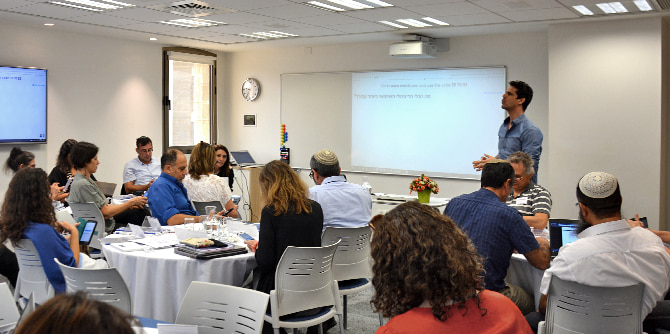
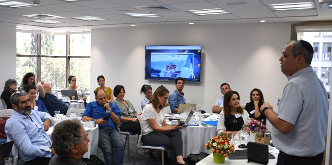

אלעד דרמון, יזם אינטרנט, יועץ דיגיטלי ומדריך לתרבות דיגיטלית, הציג מגמות וחידושים טכנולוגיים. הוא דיבר על הצורך בשינוי תפיסה בעידן המידע ועל הצורך לשנות את האופן שבו אנו יוצרים מסרים ומציגים אותם. נדונה תופעת ה"שיבוש וההפרעה" (Disruption) שיוצרות הטכנולוגיות החדשות, השפעתן על העולם ועלינו, והצורך להתאים את עצמנו לשינויים. הוצגו אתגרים שמקשים על קבלת החלטות, כמו עומס מידע וקושי במיקוד ובריכוז, ונלמדו דרכים לרתימת התהליכים והחידושים לעזרתנו. הוצגו כלים דיגיטליים שמסייעים ליצירת מסרים אפקטיביים, אפליקציות, מנועי חיפוש, אתרים ייעודיים, כלים לאיסוף, עיצוב וארגון מידע באופן נהיר ונגיש, פלטפורמות לשיתוף ועוד. אלעד הציע דרכים להתבוננות ביקורתית על התכנים שאנו מייצרים ועל האופן שבו אנו מציגים אותם והציע קריטריונים מנחים. הלמידה והתרגול נעשו באמצעות הטלפונים הסלולריים האישיים.

תומר גרוסמן, מפקח על-יסודי בחמ"ד ומוביל החדשנות הפדגוגית והטכנולוגית במינהל החינוך הדתי, בוגר מחזור כ"ו של בית ספר מנדל למנהיגות חינוכית, סיפר לבוגרים על כנס מקוון שהוביל בחמ"ד והדגים את השימוש שעשה בכלים דיגיטליים בכנס ובמוסדות החינוך שבפיקוחו.
בהמשך הרצה
מאור קפלנסקי, מומחה בתחום המיתוג האישי וניהול מוניטין באינטרנט, על בניית אסטרטגיה למיתוג חיובי ברשת, בניית מוניטין חיובי וההתמודדות עם אזכורים שליליים. נדונו גורמים המשפיעים על המוניטין והוצגו דרכים להשפיע על עיצובם. הדברים הומחשו באמצעות מקרים ודוגמאות קונקרטיות. בסוף הערב ניתנה לבוגרים הזדמנות לייעוץ אישי עם קפלינסקי. את יום העיון תכננה והובילה
שרונה בר-נס, חברת צוות בכירה ביחידת בוגרי מנדל.

{kind=link}
{kind=link}